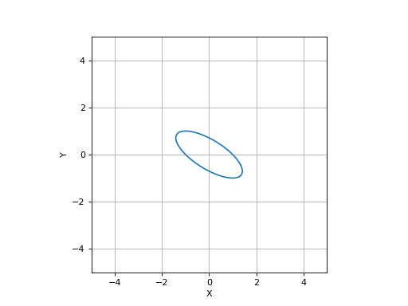
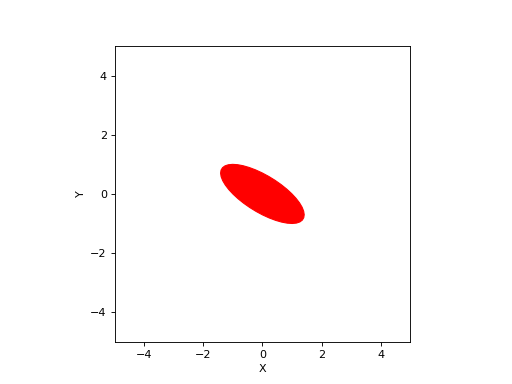

2D ellipse
- class Ellipse(radii=None, E=None, centre=(0, 0), theta=None)[source]
- classmethod FromPerimeter(p)[source]
Create an ellipse that fits a set of perimeter points
- Parameters
p (ndarray(2,N)) – a set of 2D perimeter points
- Returns
an ellipse instance
- Return type
- classmethod FromPoints(p)[source]
Create an equivalent ellipse from a set of interior points
- Parameters
p (ndarray(2,N)) – a set of 2D interior points
- Returns
an ellipse instance
- Return type
Computes the ellipse that has the same inertia as the set of points.
- Seealso
- classmethod Polynomial(e)[source]
Create an ellipse from polynomial
- Parameters
e (arraylike(4) or arraylike(5)) – polynomial coeffients \(e\) or \(\eta\)
- Returns
an ellipse instance
- Return type
An ellipse can be specified by a polynomial
\[e_0 x^2 + e_1 y^2 + e_2 xy + e_3 x + e_4 y + e_5 = 0\]or
\[x^2 + \eta_1 y^2 + \eta_2 xy + \eta_3 x + \eta_4 y + \eta_5 = 0\]The ellipse matrix and centre coordinate are determined from the polynomial coefficients.
- __init__(radii=None, E=None, centre=(0, 0), theta=None)[source]
Create an ellipse
- Parameters
radii (arraylike(2), optional) – radii of ellipse, defaults to None
E (ndarray(2,2), optional) – 2x2 matrix describing ellipse, defaults to None
centre (arraylike(2), optional) – centre of ellipse, defaults to (0, 0)
theta (float, optional) – orientation of ellipse, defaults to None
- Raises
ValueError – bad parameters
The ellipse shape can be specified by
radiiandthetaor by a 2x2 matrixE.Internally the ellipse is represented by a 2x2 matrix and the centre coordinate such that
\[(\vec{x} - \vec{x}_0)^T \mat{E} (\vec{x} - \vec{x}_0) = 1\]Example:
- contains(p)[source]
Test if points are contained by ellipse
- Parameters
p (arraylike(2), ndarray(2,N)) – point or points to test
- Returns
true if point is contained within ellipse
- Return type
bool or list(bool)
- plot(**kwargs)[source]
Plot ellipse
- Parameters
kwargs – arguments passed to :func:`~spatialmath.base.graphics.plot_ellipse
- Returns
list of artists
- Return type
_type_
Example:
>>> from spatialmath import Ellipse >>> from spatialmath.base import plotvol2 >>> plotvol2(5) >>> e = Ellipse(E=np.array([[1, 1], [1, 2]])) >>> e.plot() >>> e.plot(filled=True, color='r')
(Source code, png, hires.png, pdf)
 (Source code, png, hires.png, pdf)
 - Seealso
- points(resolution=20)[source]
Generate perimeter points
- Parameters
resolution (int, optional) – number of points on circumferance, defaults to 20
- Returns
set of perimeter points
- Return type
Points2
Return a set of resolution points on the perimeter of the ellipse. The perimeter set is not closed, that is, last point != first point.
- Seealso
ellipse()
- property E
Return ellipse matrix
- Returns
ellipse matrix
- Return type
ndarray(2,2)
The matrix
Edescribes the shape of the ellipse\[(\vec{x} - \vec{x}_0)^T \mat{E} (\vec{x} - \vec{x}_0) = 1\]
- property area: float
Area of ellipse
- Returns
area
- Return type
float
- property centre: numpy.ndarray[Any, numpy.dtype[numpy.floating]]
Return ellipse centre
- property polynomial
Return ellipse as a polynomial
- Returns
polynomial
- Return type
ndarray(6)
\[e_0 x^2 + e_1 y^2 + e_2 xy + e_3 x + e_4 y + e_5 = 0\]
- property radii: numpy.ndarray[Any, numpy.dtype[numpy.floating]]
Return radii of the ellipse
{kind=link}
{kind=link}
{kind=link}
{kind=link}